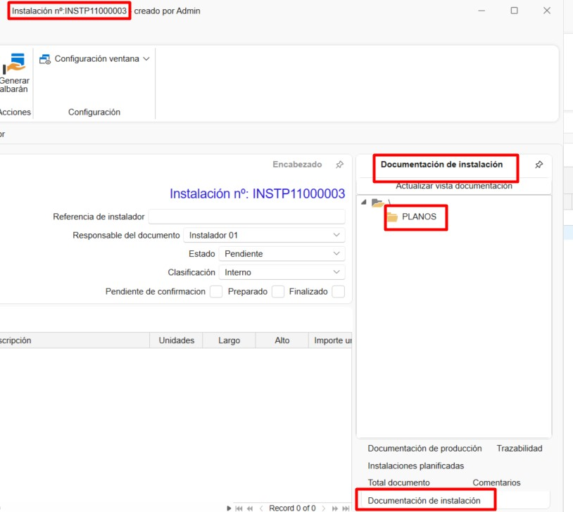
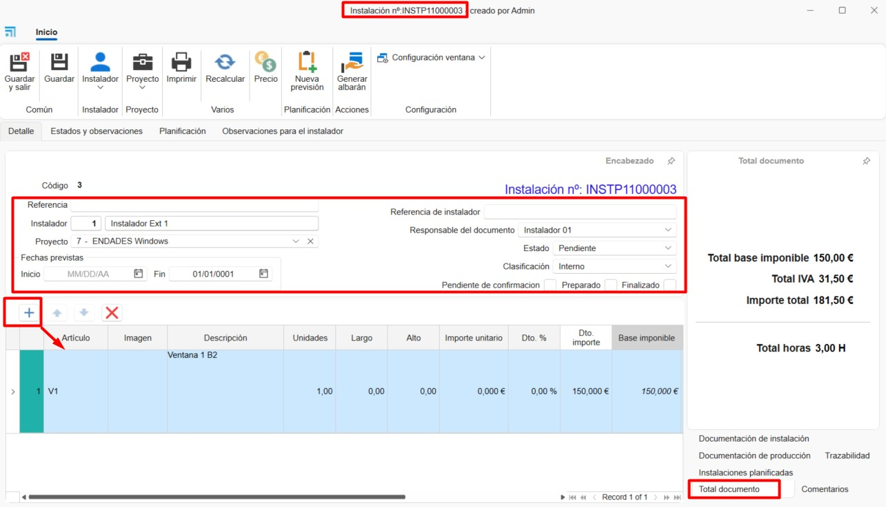
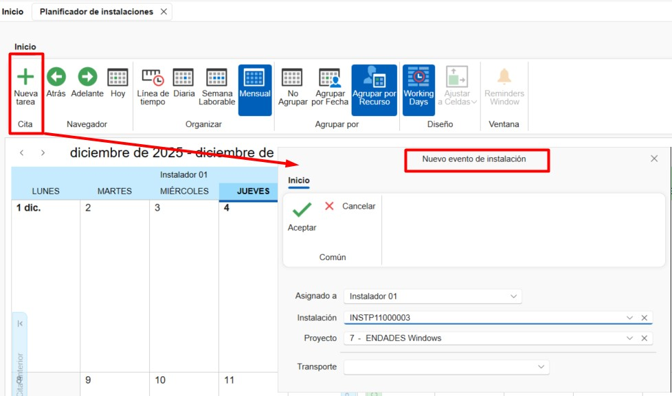

Installazioni
1. Introduzione
Questo manuale è progettato per guidare gli utenti nella creazione e pianificazione di installazioni e montaggi da ENBLAU. In questo modo, le installazioni pianificate possono essere assegnate a installatori interni ed esterni attraverso la piattaforma.
2. Installazioni
Nel modulo Installazioni puoi accedere a:

2.1. Installazione
2.1.1. Configurazioni
Da Installazione puoi accedere a Configurazioni per definire i parametri del sistema.

1. Sequenze di Numerazione Definisci sequenze di numerazione per ogni tipo di documento.

2. Classificazioni Stabilisci classificazioni da assegnare ai documenti di installazione.

3. Pianificatore Definisci Classificazioni e Stati per le attività del pianificatore.


ℹ️ Nota: Queste classificazioni e stati saranno disponibili quando si crea una nuova attività nel Pianificatore di Installazione.
4. Directory Predefinite Configura le cartelle che verranno generate automaticamente con ogni installazione.


ℹ️ Nota: Le directory predefinite sono cartelle che vengono generate automaticamente con ogni nuova installazione.
5. Definizione Stati Configura gli stati disponibili per ogni tipo di documento.

2.1.2. Creare un Ordine di Installazione
1. Nuovo Per creare un'installazione, vai a Installazione → Nuovo. Si aprirà una finestra in cui devi completare i campi obbligatori: - Tipo documento - Numerazione - Numero documento - Installatore esterno - Progetto

2. Ordine di Installazione
Nella barra superiore del documento, sono disponibili alcune funzioni: - Stampa → Stampa report del documento di installazione. - Prezzi → Modifica i prezzi predefiniti dell'Installatore Esterno. - Nuova Previsione → Crea una previsione di installazione da riflettere nel pianificatore di installazioni.
Scheda Dettagli Questa scheda mostra tutti i campi precedentemente completati (modificabili). In basso puoi aggiungere posizioni definendo: - Nome articolo - Descrizione - Unità - Prezzo, ecc.

Scheda Stati e Osservazioni Questa scheda configura campi come: - Metodo di pagamento - Date di richiesta e cancellazione - IVA, ecc.

Scheda Pianificazione Qui indichi le date di inizio e fine per la pianificazione e assegni installatori interni.

Scheda Osservazioni per Installazione Spazio per aggiungere note specifiche per l'installazione.
3. Bolla di Installazione
Da un ordine di installazione, puoi generare una bolla di installazione. Specifica la modalità di bollatura e poi stampala.


4. Fatture Installatori Esterni
-
Dalla sezione Installazione, vai a Fatturazione Bolle.

-
Da Fatturazione Bolle, indica l'installatore esterno a cui verrà emessa la fattura.

-
Apparirà un elenco delle bolle da fatturare per l'installatore selezionato. Indica nella colonna Da Fatturare cliccando e selezionando la casella per le bolle da fatturare. Ci sono anche opzioni nei pulsanti della barra superiore per Seleziona Tutto o Deseleziona Tutto.

-
Prima di generare la fattura, puoi specificare la modalità Raggruppa contenuto per bolla (selezionata per impostazione predefinita) o Contenuto Dettagliato. Puoi anche indicare a quale progetto emettere la fattura.

-
Una volta generata la fattura, puoi stamparla o modificarla se necessario.

2.1.4. Creare Installazione da un Documento di Vendita
Da un documento di vendita (ordine, misurazione o produzione) puoi:
- Creare una previsione di installazione
- Creare un'installazione direttamente

1. Previsione di Installazione
Ti permette di indicare una previsione configurando:
- Installatore esterno
- Data stimata
- Importi concordati

2. Crea Installazione
Quando crei l'installazione da un documento di vendita, devi indicare le unità da installare per ogni posizione. Successivamente, puoi aggiungere installatori esterni o interni a quell'installazione.

2.1.3. Stampare Report di Installazione
Permette la stampa dei report disponibili:
- Report di Installazione
- Report dei Tempi
- Ordine di Installazione
Prima della stampa, vengono mostrate le condizioni e una breve descrizione del report selezionato.

2.2. Installatori Esterni
Per registrare nuovi installatori esterni:
- Vai a Installazione → Installatori Esterni → Nuovo
-
Completa i campi richiesti:
- Nome
- Indirizzo
- Partita IVA (NIF)
- Dati di contatto
-
Prezzi, ecc.

2.3. Pianificatore di Installazioni
Da Installazioni → Pianificatore di Installazioni puoi visualizzare e gestire le attività in un calendario per ogni installatore (interno o esterno).
Dalla barra delle opzioni, puoi organizzare la visualizzazione del calendario (giorno, settimana, mese) e raggruppare le attività per risorse o date.

1. Crea Attività
Per creare una nuova attività:
- Seleziona Nuova Attività
-
Nella finestra Nuovo Evento di Installazione, assegna:
- Installatore
- Numero installazione
-
Progetto

-
Nella finestra Attività, dettaglia:
- Stati e classificazioni
- Data e ora di inizio/fine
- Descrizione breve
-
Note

2. Calendario
Le attività assegnate appaiono nel calendario. Passando il cursore su un'attività, vengono visualizzate informazioni di base:
- Nome progetto
- Numero installazione
- Descrizione breve
I colori indicano lo stato e la classificazione (definiti in precedenza nella configurazione). Puoi anche modificare facendo doppio clic sull'attività.

 Español
Español
 English
English
 Italiano
Italiano
 Português
Português